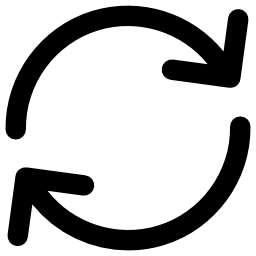

В данном разделе описывается функциональность окна с графиком и работа с его элементами управления.

Перезагрузить график — обновляет график, очищая текущие данные и загружая их заново.
Трансформация — открывает меню с возможностью логарифмирования осей, вычисления производной и преобразования Фурье.
Настройка сетки — включает или отключает отображение сетки на графике по осям X и Y, а так же можно настроить прозрачность осей
Настройки оси Y — позволяет инвертировать ось Y и управлять её масштабированием.
Настройки оси X — позволяет инвертировать ось X и управлять её масштабированием.
Изменение цвета линии — открывает диалог выбора цвета, позволяя изменить цвет линии графика и основных надписей.
Информация о графике — отображает метаданные графика, включая информацию о самом графике.
Экспорт графика — позволяет сохранить график в формате PNG, JPG, CSV, Excel или PDF.
Используйте эти функции для удобной работы с графиком и анализа данных.